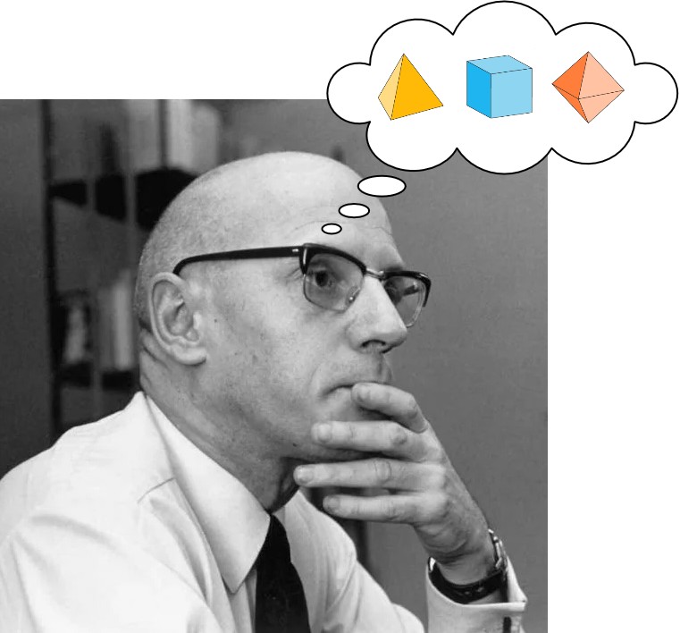
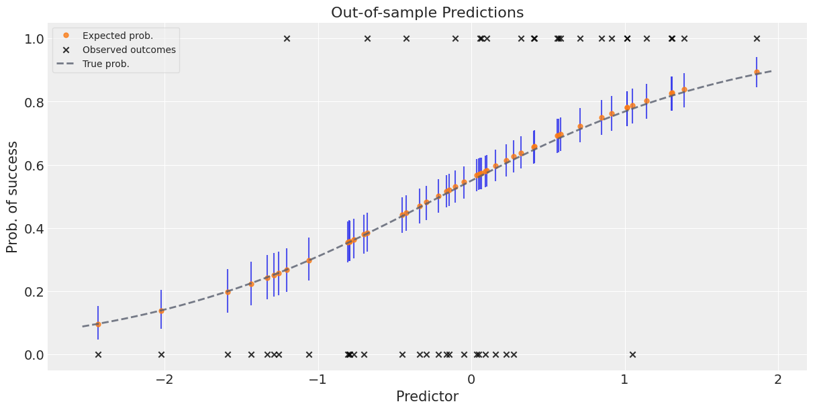
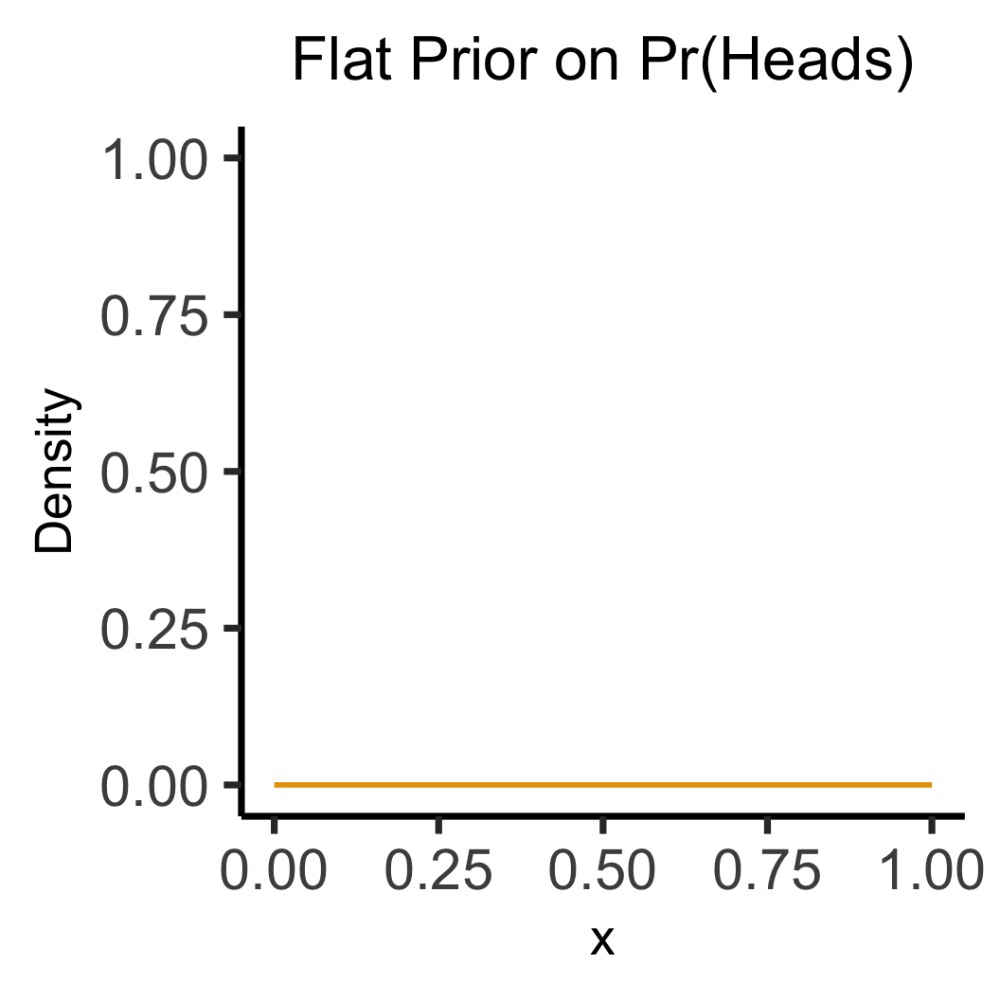
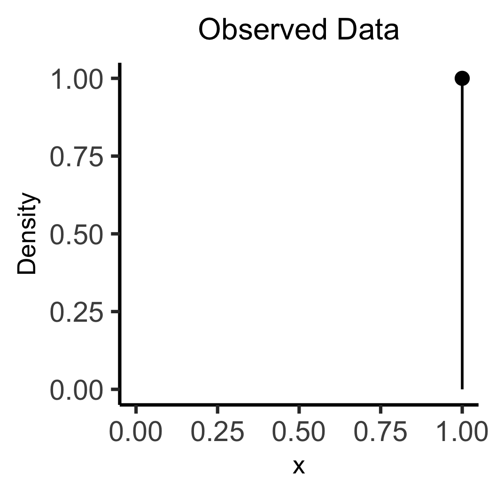
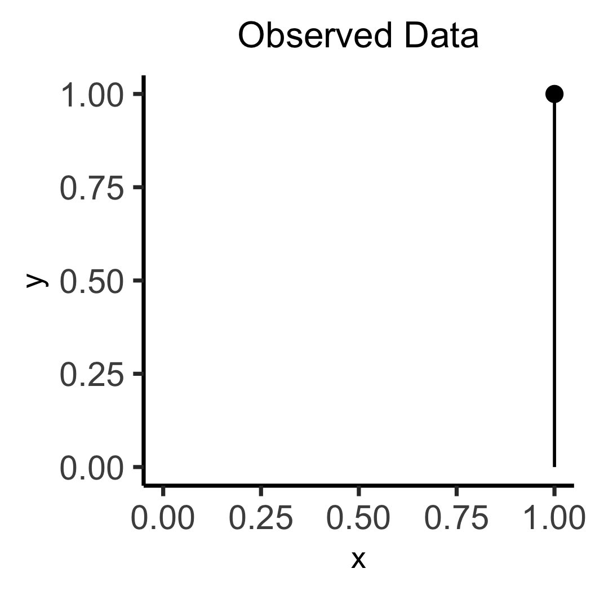

Week 6: Bayesian Workflow, Midterm Pre-Review
DSAN 5650: Causal Inference for Computational Social Science
Summer 2025, Georgetown University
Wednesday, June 25, 2025
Logistics / Table-Setting
\[ \DeclareMathOperator*{\argmax}{argmax} \DeclareMathOperator*{\argmin}{argmin} \newcommand{\bigexp}[1]{\exp\mkern-4mu\left[ #1 \right]} \newcommand{\bigexpect}[1]{\mathbb{E}\mkern-4mu \left[ #1 \right]} \newcommand{\definedas}{\overset{\small\text{def}}{=}} \newcommand{\definedalign}{\overset{\phantom{\text{defn}}}{=}} \newcommand{\eqeventual}{\overset{\text{eventually}}{=}} \newcommand{\Err}{\text{Err}} \newcommand{\expect}[1]{\mathbb{E}[#1]} \newcommand{\expectsq}[1]{\mathbb{E}^2[#1]} \newcommand{\fw}[1]{\texttt{#1}} \newcommand{\given}{\mid} \newcommand{\green}[1]{\color{green}{#1}} \newcommand{\heads}{\outcome{heads}} \newcommand{\iid}{\overset{\text{\small{iid}}}{\sim}} \newcommand{\lik}{\mathcal{L}} \newcommand{\loglik}{\ell} \DeclareMathOperator*{\maximize}{maximize} \DeclareMathOperator*{\minimize}{minimize} \newcommand{\mle}{\textsf{ML}} \newcommand{\nimplies}{\;\not\!\!\!\!\implies} \newcommand{\orange}[1]{\color{orange}{#1}} \newcommand{\outcome}[1]{\textsf{#1}} \newcommand{\param}[1]{{\color{purple} #1}} \newcommand{\pgsamplespace}{\{\green{1},\green{2},\green{3},\purp{4},\purp{5},\purp{6}\}} \newcommand{\pedge}[2]{\require{enclose}\enclose{circle}{~{#1}~} \rightarrow \; \enclose{circle}{\kern.01em {#2}~\kern.01em}} \newcommand{\pnode}[1]{\require{enclose}\enclose{circle}{\kern.1em {#1} \kern.1em}} \newcommand{\ponode}[1]{\require{enclose}\enclose{box}[background=lightgray]{{#1}}} \newcommand{\pnodesp}[1]{\require{enclose}\enclose{circle}{~{#1}~}} \newcommand{\purp}[1]{\color{purple}{#1}} \newcommand{\sign}{\text{Sign}} \newcommand{\spacecap}{\; \cap \;} \newcommand{\spacewedge}{\; \wedge \;} \newcommand{\tails}{\outcome{tails}} \newcommand{\Var}[1]{\text{Var}[#1]} \newcommand{\bigVar}[1]{\text{Var}\mkern-4mu \left[ #1 \right]} \]
- Midterm will be 27-Hour Take-Home Exam
- A “Midterm” folder will magically appear on guhub.io at 9pm EDT on Wednesday, July 2 (immediately after lecture ends), due 11:59pm EDT on Thursday, July 3
- \(\leadsto\) Lecture recording will be a video resource for you, providing all the necessary background for midterm questions (like the intro-to-Afrobarometer last week!)
From HWs to Midterm
- HWs: More focus on social science / more “in the weeds” (checking details, manipulating prior parameters, debugging, etc.)
- Midterm: More focus on causality, bc, in 2 hours I can test you on concepts and things like “What are the backdoor paths here? How would you close them?” more easily than on loading datasets, cleaning, fitting models, etc.
Looking Forwards (Post-Midterm)
- More text analysis!
- Making the connection between modeling and predicting
Bayesian Workflow
(There are a lot of words in HW2 that I haven’t had the chance to explain yet!)
- Prior
- Prior Predictive
- Posterior
- Posterior Predictive
Modeling How Trees Become Forests
- Your model, if it’s generative (which… nearly all in 5650 are), relates observed data \(\mathbf{D}\) to a set of underlying parameters \(\boldsymbol{\theta}\) that are hypothesized as “giving rise” to \(\mathbf{D}\)
- When you specify how exactly this “giving rise” works, you’re specifying a DGP!
- PGMs: human-brain-friendly (bc graphical) language for writing DGPs; then move to PyAgrum \(\rightarrow\) Stan \(\rightarrow\) PyMC to “encode” PGMs (in
0100101) so computer can…
| Super-charge your EDA/modeling | Estimate \(\boldsymbol{\theta}\) from data |
|---|---|
| \(\leadsto\) Prior distributions | \(\leadsto\) Posterior distributions |
Code
library(tidyverse)
library(ggExtra)
gen_walk_plot <- function(walk_data, a=0.0075) {
# print(end_df)
grid_color <- rgb(0, 0, 0, 0.1)
# And plot!
walkplot <- ggplot() +
geom_line(
data = walk_data$long_df,
aes(x = t, y = pos, group = pid),
linewidth = g_linewidth,
alpha = a,
#color = cb_palette[2]
#color = "#cf8f00"
color = "black"
) +
geom_point(
data = walk_data$end_df,
aes(x = t, y = endpos),
alpha = 0
) +
scale_x_continuous(
breaks = seq(
0,
walk_data$num_steps,
walk_data$num_steps / 4
)
) +
scale_y_continuous(
breaks = seq(-20, 20, 10)
) +
theme_dsan(base_size=24) +
theme(
legend.position = "none",
# title = element_text(size = 16)
) +
theme(
panel.grid.major.y = element_line(
color = grid_color,
linewidth = 1,
linetype = 1
)
) +
labs(
title = paste0(
walk_data$num_people, " Random Walks, ",
walk_data$num_steps, " Steps"
),
x = "Number of Steps",
y = "Position"
)
}
walk_data <- readRDS("assets/walk_data.rds")
# 16 steps
# wp1 <- gen_walkplot(500, 16, 0.05)
# ggMarginal(wp1, margins = "y", type = "histogram", yparams = list(binwidth = 1))
wp <- gen_walk_plot(walk_data) + ylim(-30,30)
ggMarginal(
wp, margins = "y",
type = "histogram",
yparams = list(binwidth = 1)
)Prior “Stage” Distributions
- RVs \(\boldsymbol\theta\) = params of your model, RVs \(\mathbf{X}\) = data \(\leadsto\) Generative model \(\pedge{\boldsymbol\theta}{\mathbf{X}}\)
- Enter Prior World (Before observing any data): Since we have priors over \(\boldsymbol\theta\) \(\leadsto\) we can sample values of \(\boldsymbol\theta\), then generate synthetic data on the basis of these values
Prior Distribution: \(\Pr(\boldsymbol{\theta}^{❓})\)
What can I guess about values of my parameters from background knowledge of the world? e.g.:
- Human heights can’t be negative
- Data collected at a bar \(\Rightarrow\) Age \(\geq\) 18, \(\Pr(\text{Age} = x)\) decreases as \(x\) goes above 30

Prior Predictive Distribution: \(\Pr(\mathbf{X}^{❓} \mid \boldsymbol{\theta}^{❓})\)
What could the outcomes look like if I ran my guesses through the DGP?
100 simulated heights, none are negative
1K sim bar-goers; 80% have this haircut \(\rightarrow\)

Posterior “Stage” Distributions
- RVs \(\boldsymbol\theta\) = params of your model, RVs \(\mathbf{X}\) = data \(\leadsto\) Generative model \(\pedge{\boldsymbol\theta}{\mathbf{X}}\)
Posterior Distribution: \(\Pr\left(\boldsymbol{\theta} \; \middle| \; \mathbf{X} = \ponode{\mathbf{X}}\right)\)
Now we observe data: \(\pnode{\mathbf{X}} \leadsto \ponode{\mathbf{X}}\), which means we can use Bayes’ Rule to infer distribution over \(\boldsymbol{\theta}\): what values are most likely to produce \(\ponode{\mathbf{X}}\)?
- 60% of observed bar-goers have that haircut \(\Rightarrow\) \(\boldsymbol{\theta}_{\text{post}} \approx \frac{0.6 + 0.8}{2} = 0.7\)
- Coin = \(\textsf{H}\) 4/5 times \(\Rightarrow\) \(\boldsymbol{\theta} = p = \frac{0.5 + 0.8}{2} = 0.65\)
- Coin = \(\textsf{H}\) 5/5 times \(\Rightarrow\) \(\boldsymbol{\theta} = p = \frac{0.5 + 1.0}{2} = 0.75\)
Posterior Predictive Distribution: \(\Pr(\mathbf{X} \mid \boldsymbol{\theta})\)
Now that we’ve fit \(\Pr(\boldsymbol{\theta})\) to data, can generate as much new data as we want, e.g. to evaluate how well model predicts outcomes for test data

Why Do We Need “Subjective” Priors?
- Under frequentism… (tldr) literally no method for dealing with shades of uncertainty
- Frequentist assumption: For a given coin, \(\Pr(\textsf{Heads})\) is not a Random Variable! It’s some number, like 0.5 or 0.8. It’s the asymptote of \(\frac{\#[\textsf{Heads}]}{\#[\textsf{Heads}] + \#[\textsf{Tails}]}\) as \(n \rightarrow \infty\)
- So, if we flip coin 1 time, and get \(\textsf{Heads}\), no basis for inferring \(\Pr(\textsf{Coin is Fair})\) vs. \(\Pr(\textsf{Coin is Biased})\): Both are undefined. We’ve… “discovered” that \(\Pr(\textsf{Heads}) = 1\)
- By using Bayesian inference, we can bring prior knowledge into our studies, which we’ll need to do especially for complex emergent systems: societies, economies, etc.!
- In fact, as a guy named Laplace discovered in the nineteenth century, frequentism = Bayesian inference with “flat priors”…
Flat vs. Informative Priors
Code
library(tidyverse)
flat_df <- tibble(x=seq(0, 1, 0.1), y=0)
flat_df |> ggplot(aes(x=x, y=y)) +
geom_line(
color=cb_palette[1],
linewidth=g_linewidth
) +
ylim(0, 1) +
labs(
title="Flat Prior on Pr(Heads)",
y="Density"
) +
theme_dsan(base_size=28) +
theme(title=element_text(size=20))
library(tidyverse)
data_df <- tibble(x=1, y=1)
data_df |> ggplot(aes(x=x, y=y)) +
geom_point(size=5) +
geom_segment(
x=1, y=0, yend=1, linewidth=g_linewidth
) +
xlim(0, 1) +
ylim(0, 1) +
labs(
title="Observed Data",
y="Density"
) +
theme_dsan(base_size=28) +
theme(title=element_text(size=20))
library(tidyverse)
library(latex2exp)
w_label <- TeX("Width = $1/n$")
h_label <- TeX("Height = $n$")
data_df <- tibble(x=1, y=1)
data_df |> ggplot(aes(x=x, y=y)) +
geom_segment(
x=1, y=0, yend=1, linewidth=g_linewidth,
color=cb_palette[1], arrow=arrow()
) +
geom_segment(
x=0, y=0, xend=1, linewidth=g_linewidth,
color=cb_palette[1]
) +
xlim(0, 1) +
ylim(0, 1) +
labs(
title="Posterior of Pr(Heads)",
y = "Density"
) +
theme_dsan(base_size=28) +
theme(title=element_text(size=20)) +
annotate(
geom = "text", x = 0.5, y = 0.8,
label = w_label, hjust = 0, vjust = 1, size = 8
) +
annotate(
geom = "text", x = 0.5, y = 0.7,
label = h_label, hjust = 0, vjust = 1, size = 8
)
\[ \otimes \]

\[ \leadsto \]
Code
library(tidyverse)
unif_df <- tibble(x=seq(0, 1, 0.1), y=1)
unif_df |> ggplot(aes(x=x, y=y)) +
geom_line(
color="#e69f00", linewidth=g_linewidth
) +
annotate('rect', xmin=0, xmax=1, ymin=0, ymax=1, fill='#e69f00', alpha=0.3) +
xlim(0, 1) + ylim(0, 1) +
labs(title="Uniform Prior on Pr(Heads)") +
theme_dsan(base_size=28) +
theme(title=element_text(size=20))
library(tidyverse)
data_df <- tibble(x=1, y=1)
data_df |> ggplot(aes(x=x, y=y)) +
geom_point(size=5) +
geom_segment(
x=1, y=0, yend=1, linewidth=g_linewidth
) +
xlim(0, 1) +
ylim(0, 1) +
labs(title="Observed Data") +
theme_dsan(base_size=28) +
theme(title=element_text(size=20))
library(tidyverse)
data_df <- tibble(x=1, y=1)
x_vals <- seq(0, 1, 0.01)
my_exp <- function(x) exp(1-1/(x^2))
y_vals <- sapply(x_vals, my_exp)
data_df <- tibble(x=x_vals, y=y_vals)
rib_df <- tibble(x=x_vals, ymax=y_vals, ymin=0)
ggplot() +
# stat_function(fun=my_exp, linewidth=g_linewidth, color=cb_palette[1]) +
geom_line(
data=data_df,
aes(x=x, y=y),
linewidth=g_linewidth, color=cb_palette[1]
) +
geom_ribbon(
data=rib_df,
aes(x=x, ymin=ymin, ymax=ymax),
fill=cb_palette[1], alpha=0.3
) +
# geom_segment(
# x=1, y=0, yend=1, linewidth=g_linewidth,
# color=cb_palette[1], arrow=arrow()
# ) +
# geom_segment(
# x=0, y=0, xend=1, linewidth=g_linewidth,
# color=cb_palette[1]
# ) +
xlim(0, 1) +
ylim(0, 1) +
labs(title="Posterior of Pr(Heads)") +
theme_dsan(base_size=28) +
theme(title=element_text(size=20))\[ \otimes \]

\[ \leadsto \]
Lab Time!
References
DSAN 5650 Week 6: Bayesian Workflow